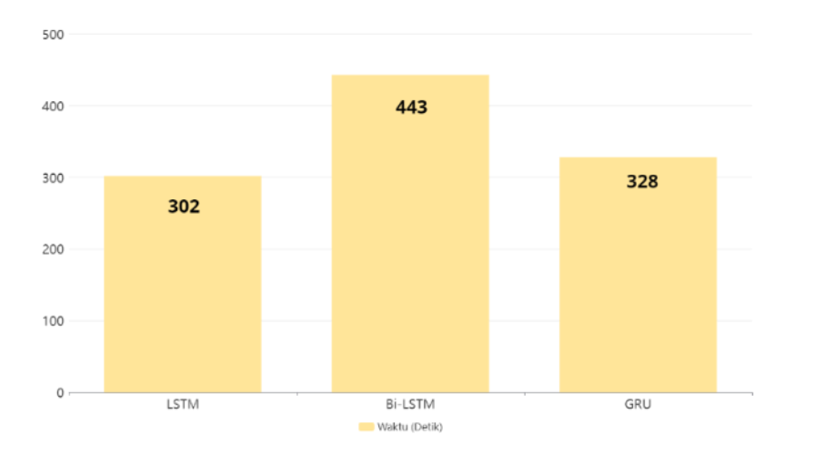
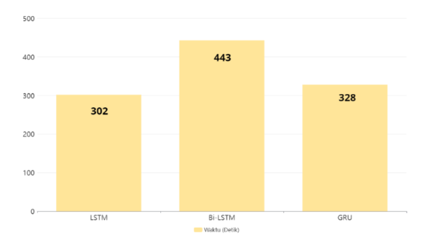

Runner-up of Amikom ICT Award (AMICTA) 2023 in the AI
and IOT category
GolekFood is an Indonesian food or drink recommendation
website based on nutritional value. As an AI Engineer
and data scientist in this project, I am in charge of
cleaning data, analysing data, applying machine learning
algorithms and deploying models so that they can be
accessed through APIs.
Best Capstone Project at Dicoding Academy Certified
Independent Study X Kampus Merdeka
RECCOFFEE is a coffee bean recommendation website based
on user preferences which include aroma, acid, body,
flavour, and aftertaste. The recommendation system on
this website is made using the Gaussian Naive Bayes
algorithm.
This project is a dataset analysis project for Capital
Bikeshare, a bicycle-sharing system that serves
Washington, D.C., and certain counties of the larger
metropolitan area. The goal of this project is to gain
insights from the data in order to answer several
business questions that determine the company's
decisions.
This project is a clickbait news headline
classification project using three different deep
learning algorithms namely LSTM, Bi-LSTM, and GRU. The
three algorithms are compared based on accuracy,
precision, recall, and F1-score, and training time. This
project is also an experiment from a research with my
lecturer at the university.
This project aims to create an app recommendation
system on the Google Play Store dataset based on its
category. Recommendations utilise cosine simmilarity to
measure the similarity between apps.
This project aims to predict future petrol prices based
on existing time series data. The prediction process
uses three algorithms namely Support Vector Regressor,
Gradient Boosting Regressor, and KNeighbors Regressor.
The three algorithms through the process of
hyperparameter tuning.
This is a project to classify natural images. The
images have four categories: cat, flower, fruit, and
human. Classification utilises TensorFlow's Image Data
Generator.
This is a project that aims to classify whether water
is safe for consumption or not based on its chemical
content. This project is run using the PySpark
library.
This project is an experimental research project with
my lecturer that aims to classify whether a tweet
contains disaster event information or not. This project
uses the SVM algorithm by modifying some parameters in
it.


 
